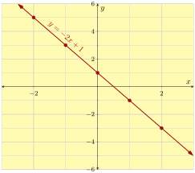
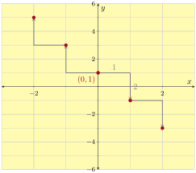
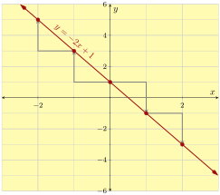
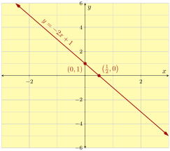
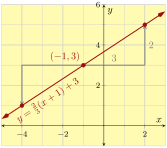
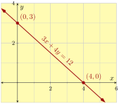
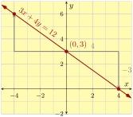
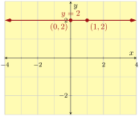
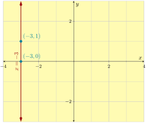

Section 3.9 Strategies for Graphing Lines
Previous several sections covered methods for plotting a graph of a linear equation in two variables.
We’ve learned three forms for a linear equation:
slope-intercept form \(y=mx+b\)
point-slope form \(y=m\left(x-x_0\right)+y_0\)
standard form \(Ax+By=C\)
We’ve studied two special types of line:
horizontal line \(y=k\)
vertical line \(x=h\)
We’ve practiced three ways to graph a line:
building a table of \(x\)- and \(y\)-values
plotting one point (often the \(y\)-intercept) and drawing slope triangles
plotting its \(x\)-intercept and \(y\)-intercept
In this section, we review these ideas, especially what steps to take to plot a graph of a linear equation.
Subsection 3.9.1 Graphing Lines in Slope-Intercept Form
To review various methods for plotting a line, we’ll start by taking one line, \(y=-2x+1\text{,}\) and graph it using each of the strategies we’ve learned.
Example 3.9.2. Building a Table.
First, we’ll graph \(y=-2x+1\) by building a table of values. Our first task is to pick some \(x\)-values to use in the table, and we arbitrarily choose \(-2,-1,0,1,2\text{.}\) It’s a good habit to use at least five values when plotting this way. After this, we carefully evaluate \(y\) over and over, and plot the resulting points.
| \(x\)-value | \(y\)-value | Point |
| \(\highlight{-2}\) | \(\begin{aligned}[t]y\amp=-2(\substitute{-2})+1\\\amp=5\end{aligned}\) | \((-2,5)\) |
| \(\highlight{-1}\) | \(\begin{aligned}[t]y\amp=-2(\substitute{-1})+1\\\amp=3\end{aligned}\) | \((-1,3)\) |
| \(\highlight{0}\) | \(\begin{aligned}[t]y\amp=-2(\substitute{0})+1\\\amp=1\end{aligned}\) | \((0,1)\) |
| \(\highlight{1}\) | \(\begin{aligned}[t]y\amp=-2(\substitute{1})+1\\\amp=-1\end{aligned}\) | \((1,-1)\) |
| \(\highlight{2}\) | \(\begin{aligned}[t]y\amp=-2(\substitute{2})+1\\\amp=-3\end{aligned}\) | \((2,-3)\) |

Example 3.9.5. Using Slope Triangles.
Although making a table is straightforward, the slope triangle method is faster and reinforces the true meaning of slope. With the slope triangle method, we first identify some point on the line. Our line is in slope-intercept form, so we know the \(y\)-intercept is \((0,1)\text{.}\) Plot this first, and then we can draw slope triangles in both directions to find more points. The slope we will use is also apparent: \(-2=\frac{-2}{1}\text{.}\)


Compared to the table method, the slope triangle method:
-
is more sophisticated;
-
doesn’t take the time and space to make a table;
-
doesn’t involve lots of calculations where you might make a human error;
-
shows slope triangles, which reinforces the meaning of slope.
Example 3.9.8. Using intercepts.
If we use \(x\)- and \(y\)-intercepts to plot \(y=-2x+1\text{,}\) we have to find those intercepts first. For our current line, it is apparent that the \(y\)-intercept is at \((0,1)\text{.}\) But where is the \(x\)-intercept?
Set \(y=0\text{.}\)
\begin{align*}
y\amp=-2x+1\\
\substitute{0}\amp=-2x+1\\
0\subtractright{1}\amp=-2x\\
-1\amp=-2x\\
\divideunder{-1}{-2}\amp=x\\
\frac{1}{2}\amp=x
\end{align*}
So the \(x\)-intercept is at \(\left(\frac{1}{2},0\right)\text{.}\) Plotting both intercepts, we can connect the dots with a straight line.

This worked, but here are some observations about why this method is not the greatest.
-
Algebra was required to solve for at least one of the intercepts.
-
We had to plot a point with a fraction in its coordinates.
-
We only plotted two points and they turned out to be very close to each other. So if there is even a small inaccuracy in where we marked the points or how we use a straight edge, it could result in a line that is significantly off.
Note 3.9.10.
When a line is presented in slope-intercept form and \(b\) is an integer, our opinion is that the slope triangle method is the best choice for making its graph.
Subsection 3.9.2 Graphing Lines in Point-Slope Form
When we graph a line in point-slope form like \(y=\frac{2}{3}(x+1)+3\text{,}\) the slope triangle method is the obvious choice. We can see a point on the line, \((-1,3)\text{,}\) and the slope is apparent: \(\frac{2}{3}\text{.}\) Here is the graph:

Other graphing methods would take more work and miss the purpose of point-slope form. To graph a line in point-slope form, we recommend always using slope triangles.
Subsection 3.9.3 Graphing Lines in Standard Form
The line \(3x+4y=12\) is in standard form. How should we graph it? We’ll review methods we learned and compare them.
Example 3.9.12. Building a Table of \(x\)- and \(y\)-values.
To make a table, we could substitute \(x\) for various numbers and use algebra to find the corresponding \(y\)-values. Let’s start with \(x=-2\text{,}\) planning to move on to \(x=-1,0,1,2\text{.}\)
\begin{align*}
3x+4y\amp=12\\
3(\substitute{-2})+4y\amp=12\\
-6+4y\amp=12\\
4y\amp=12\addright{6}\\
4y\amp=18\\
y\amp=\divideunder{18}{4}=\frac{9}{2}
\end{align*}
The first point we found is \(\left(-2,\frac{9}{2}\right)\text{.}\) This has been a lot of calculation, and we ended up with a fraction we will have to plot. And we have to repeat this process a few more times to get more points for the table. The table method is generally not a preferred way to graph a line in standard form. So let’s look at other options.
Example 3.9.13. Using intercepts.
Next, we’ll try graphing \(3x+4y=12\) using intercepts. We set up a small table to record the two intercepts:
| \(x\)-value | \(y\)-value | Intercept | |
| \(x\)-intercept | \(0\) | ||
| \(y\)-intercept | \(0\) |
We have to calculate the line’s \(x\)-intercept by substituting \(y=0\) into the equation:
\begin{align*}
3x+4y\amp=12\\
3x+4(\substitute{0})\amp=12\\
3x\amp=12\\
x\amp=\divideunder{12}{3}\\
x\amp=4
\end{align*}
And similarly for the \(y\)-intercept:
\begin{align*}
3x+4y\amp=12\\
3(\substitute{0})+4y\amp=12\\
4y\amp=12\\
y\amp=\divideunder{12}{4}\\
y\amp=3
\end{align*}
So the line’s \(x\)-intercept is at \((4,0)\) and its \(y\)-intercept is at \((0,3)\text{.}\) Now we can complete the table and then graph the line:
| \(x\)-value | \(y\)-value | Intercepts | |
| \(x\)-intercept | \(4\) | \(0\) | \((4,0)\) |
| \(y\)-intercept | \(0\) | \(3\) | \((0,3)\) |

Example 3.9.16. With Slope Triangles.
We can always rearrange \(3x+4y=12\) into slope-intercept form, and then graph it with the slope triangle method:
\begin{align*}
3x+4y\amp=12\\
4y\amp=12\subtractright{3x}\\
4y\amp=-3x+12\\
y\amp=\divideunder{-3x+12}{4}\\
y\amp=-\frac{3}{4}x+3
\end{align*}
With the \(y\)-intercept at \((0,3)\) and slope \(-\frac{3}{4}\text{,}\) we can graph the line using slope triangles:

Compared with the intercepts method, the slope triangle method takes more time, but it works.
Here are some observations about graphing a line equation that is in standard form:
-
The intercepts method might be the quickest approach.
-
The intercepts method only tells us two intercepts of the line. When we need to know more information, like the line’s slope, and get a more accurate graph, we should take the time to convert the equation into slope-intercept form.
-
When \(C=0\) in a standard form equation we cannot use the intercepts method to plot the line anyway.
So there’s not really a clear winner for which method is best. Using intercepts or converting to slope-intercept form and using slope triangels might be preferable depending on the situation.
Subsection 3.9.4 Graphing Horizontal and Vertical Lines
We learned in Section 8 that equations in the form \(x=h\) and \(y=k\) make vertical and horizontal lines. But perhaps you will one day find yourself not remembering which is which. Making a table and plotting points can quickly remind you which type of equation makes which type of line. Let’s build a table for \(y=2\) and another one for \(x=-3\text{:}\)
| \(x\)-value | \(y\)-value | Point |
| \(0\) | \(2\) | \((0,2)\) |
| \(1\) | \(2\) | \((1,2)\) |
| \(x\)-value | \(y\)-value | Point |
| \(-3\) | \(0\) | \((-3,0)\) |
| \(-3\) | \(1\) | \((-3,1)\) |
With two points on each line, we can graph them:


Exercises 3.9.5 Exercises
Graphing by Table.
Make a table and then plot the equation.
1.
\(y={-\left(3x+2\right)}\)
| \(x\) | \(y\) | Point |
| \(-2\) | ||
| \(-1\) | ||
| \(0\) | ||
| \(1\) | ||
| \(2\) |
2.
\(y={3-2x}\)
| \(x\) | \(y\) | Point |
| \(-2\) | ||
| \(-1\) | ||
| \(0\) | ||
| \(1\) | ||
| \(2\) |
3.
\(y={{\frac{3}{4}}x-3}\)
| \(x\) | \(y\) | Point |
| \(-8\) | ||
| \(-4\) | ||
| \(0\) | ||
| \(4\) | ||
| \(8\) |
4.
\(y={{\frac{3}{2}}x-2}\)
| \(x\) | \(y\) | Point |
| \(-4\) | ||
| \(-2\) | ||
| \(0\) | ||
| \(2\) | ||
| \(4\) |
5.
\(x=1\)
| \(x\) | \(y\) | Point |
6.
\(x=3\)
| \(x\) | \(y\) | Point |
7.
\(y=6\)
| \(x\) | \(y\) | Point |
8.
\(y=8\)
| \(x\) | \(y\) | Point |
Graphing Standard Form Equations.
Find the \(x\)- and \(y\)-intercepts of the line, and then use them to graph the line.
9.
\({5x+2y}={10}\)
10.
\({2x+3y}={6}\)
11.
\({7x-3y}={21}\)
12.
\({-5x+4y}={20}\)
13.
\({9x+5y}={-45}\)
14.
\({7x+6y}={-42}\)
Graphing Slope-Intercept Equations.
Use the slope and \(y\)-intercept to plot the line.
15.
\({y = 4x-2}\)
16.
\({y = 5x+4}\)
17.
\({y = -5x-3}\)
18.
\({y = -2x+3}\)
19.
\({y = -{\frac{1}{2}}x-5}\)
20.
\({y = -{\frac{1}{2}}x+4}\)
21.
\({y = {\frac{1}{3}}x+2}\)
22.
\({y = {\frac{1}{3}}x-5}\)
23.
\({y = {\frac{6}{7}}x-3}\)
24.
\({y = {\frac{7}{5}}x-4}\)
25.
\({y = x+5}\)
26.
\({y = x+8}\)
27.
\({y = -{\frac{2}{3}}x-4}\)
28.
\({y = -{\frac{3}{2}}x+3}\)
Graphing Point-Slope Equations.
Use the slope and the apparent point to plot the line.
29.
\(y={5\mathopen{}\left(x-2\right)+4}\)
30.
\(y={4\mathopen{}\left(x-3\right)+2}\)
31.
\(y={4\mathopen{}\left(x-3\right)-5}\)
32.
\(y={2\mathopen{}\left(x-4\right)-3}\)
33.
\(y={{\frac{3}{7}}\mathopen{}\left(x+8\right)-2}\)
34.
\(y={{\frac{7}{9}}\mathopen{}\left(x-7\right)+8}\)
35.
\(y={-{\frac{3}{8}}\mathopen{}\left(x-4\right)-3}\)
36.
\(y={-{\frac{1}{2}}\mathopen{}\left(x+9\right)+6}\)
37.
\(y={-0.7\mathopen{}\left(x-7\right)-2}\)
38.
\(y={-0.4\mathopen{}\left(x-4\right)-6}\)
Choosing a Method to Graph a Line.
Use whatever method you think best to plot the line.
39.
\({y = 3x-5}\)
40.
\({y = -3x+4}\)
41.
\({y = -{\frac{6}{7}}x-3}\)
42.
\({y = {\frac{7}{5}}x+5}\)
43.
\(y={{\frac{7}{8}}\mathopen{}\left(x+6\right)-7}\)
44.
\(y={{\frac{8}{9}}\mathopen{}\left(x+3\right)-2}\)
45.
\({9x+2y}={18}\)
46.
\({-3x+y}={6}\)
47.
\(x=-5\)
48.
\(x=-3\)
49.
\(y=-1\)
50.
\(y=1\)